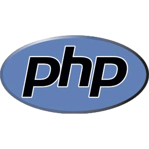

Programacion WEB
El curso es principalmente práctico y pretende introducir al alumno en la programación web mediante la utilización del lenguaje PHP y su conexión con bases de datos MySQL, lo que supondrá un primer contacto en la creación de sitios web interactivos manejables a través de un navegador de internet.
Contenido
PHP (acrónimo recursivo de PHP: Hypertext Preprocessor) es un lenguaje de código abierto muy popular especialmente adecuado para el desarrollo web y que puede ser incrustado en HTML.
 Lenguaje de Marcado para Hipertextos (HyperText Markup Language) es el elemento de construcción más básico de una página web y se usa para crear y representar visualmente una página web
Lenguaje de Marcado para Hipertextos (HyperText Markup Language) es el elemento de construcción más básico de una página web y se usa para crear y representar visualmente una página web
 Sistema de gestión de bases de datos relacional desarrollado bajo licencia dual GPL/Licencia comercial por Oracle Corporation y está considerada como la base datos open source más popular del mundo, y una de las más populares en general junto a Oracle y Microsoft SQL Server
Sistema de gestión de bases de datos relacional desarrollado bajo licencia dual GPL/Licencia comercial por Oracle Corporation y está considerada como la base datos open source más popular del mundo, y una de las más populares en general junto a Oracle y Microsoft SQL Server